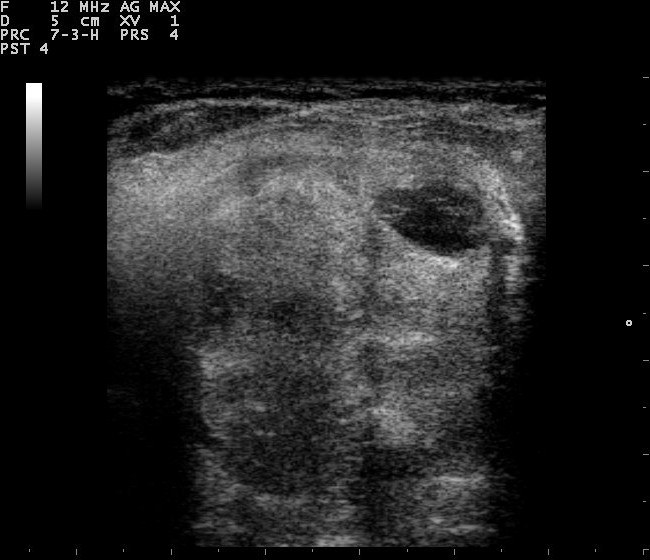

Ficha del catálogo
Ultrasonido de tiroides
- Sistema
- Endocrino
- Modalidad
- US
- Región
- Cuello
- Dificultad
- Intermedio
Estudio de elección para valorar la glándula tiroides. Detecta nódulos con gran sensibilidad y, mediante criterios ecográficos bien definidos, orienta cuáles requieren punción y cuáles solo seguimiento.
Técnica
Transductor lineal de alta frecuencia con el paciente en decúbito supino y el cuello en hiperextensión. Se recorren ambos lóbulos y el istmo en cortes longitudinales y transversales.
Qué observar
- Tamaño y ecogenicidad de la glándula, normalmente homogénea y más brillante que la musculatura vecina
- Nódulos: Describir composición (sólido o quístico), ecogenicidad, forma, márgenes y presencia de focos ecogénicos
- Rasgos sospechosos: Nódulo marcadamente hipoecoico, más alto que ancho, de márgenes irregulares o con microcalcificaciones
- Vascularización con Doppler, valorando si es periférica o central
- Ganglios cervicales, buscando pérdida del hilio graso o calcificaciones que sugieran afectación metastásica
- Patrón heterogéneo difuso con hipervascularización, sugestivo de tiroiditis
Hallazgos
Glándula tiroides de tamaño y ecogenicidad normales, con textura homogénea y sin nódulos identificables.
Perlas
Un nódulo tiroideo 'más alto que ancho' en el corte transversal es uno de los signos de sospecha más específicos de malignidad. Su fundamento es que el tumor crece atravesando los planos tisulares en lugar de respetarlos, a diferencia de las lesiones benignas.
Diagnóstico diferencial
- Nódulo coloide benigno
- Es espongiforme o predominantemente quístico, con focos ecogénicos con artefacto en cola de cometa que corresponden a cristales de coloide.
- Carcinoma papilar
- Suele ser sólido y marcadamente hipoecoico, más alto que ancho, de márgenes irregulares y con microcalcificaciones puntiformes sin sombra.
- Tiroiditis de Hashimoto
- La glándula es difusamente heterogénea e hipoecoica con septos ecogénicos y micronódulos, sin lesión focal dominante.
- Enfermedad de Graves
- Hay bocio difuso hipoecoico con hipervascularización muy marcada en Doppler, que produce el aspecto de glándula incendiada.
- Bocio multinodular
- Se identifican múltiples nódulos de características similares y predominantemente benignas, con glándula aumentada de tamaño.
- Adenopatía metastásica cervical
- El ganglio pierde el hilio graso, se hace redondeado y puede contener microcalcificaciones, áreas quísticas o vascularización periférica anómala.
Simuladores
- El esófago cervical, situado por detrás del lóbulo izquierdo, simula un nódulo (se identifica pidiendo al paciente que trague y observando el movimiento del contenido).
- El músculo largo del cuello, hipoecoico y posterior a la glándula, puede confundirse con una lesión sólida si no se reconoce su morfología alargada y simétrica.
- Las glándulas paratiroides aumentadas y los ganglios se sitúan fuera de la cápsula tiroidea y no deben informarse como nódulos tiroideos.
- La medición del nódulo en un plano distinto entre controles genera falsos crecimientos (deben usarse siempre los mismos ejes).
Por modalidad
- US
- Técnica de elección para caracterizar la glándula y los nódulos, para valorar los ganglios cervicales y para guiar la punción con aguja fina.
- TC
- Valora la extensión del bocio hacia el mediastino, la compresión de la vía aérea y la afectación ganglionar, pero el contraste yodado debe manejarse con cautela en la enfermedad tiroidea.
- RM
- Ofrece buena valoración de partes blandas y de la extensión local sin radiación, con papel complementario.
- RX
- La radiografía cervicotorácica solo muestra de forma indirecta desviación traqueal o calcificaciones.
Protocolo
El paciente se coloca en decúbito supino con una almohadilla bajo los hombros para hiperextender el cuello y exponer la región tiroidea. Se emplea un transductor lineal de alta frecuencia y se recorren de forma sistemática ambos lóbulos y el istmo en planos longitudinal y transversal, midiendo los tres diámetros de la glándula y de cada nódulo relevante. Cada nódulo se documenta describiendo composición, ecogenicidad, forma, márgenes y focos ecogénicos, y se completa con Doppler color para valorar el patrón de vascularización. Se exploran además los compartimentos ganglionares cervicales. La punción aspirativa se realiza con guía ecográfica en tiempo real cuando el nódulo cumple criterios de riesgo.
Clasificación
Los sistemas estructurados de estratificación del riesgo del nódulo tiroideo, conocidos genéricamente como TI-RADS, asignan puntos según cinco características ecográficas: Composición, ecogenicidad, forma, márgenes y focos ecogénicos. La suma de puntos sitúa al nódulo en una categoría de riesgo creciente, y la conducta, que puede ser no actuar, seguir o puncionar, depende de la combinación entre esa categoría y el tamaño del nódulo, de modo que a mayor sospecha se punciona a partir de un tamaño menor. Los resultados citológicos de la punción se informan con el sistema de Bethesda, que agrupa las muestras en categorías con un riesgo estimado de malignidad y una recomendación asociada.
Errores frecuentes
- Recomendar la punción solo por el tamaño del nódulo, sin aplicar los criterios de sospecha ecográfica.
- No explorar los compartimentos ganglionares cervicales, donde puede estar el hallazgo más relevante.
- Confundir estructuras vecinas normales, como el esófago o el músculo largo del cuello, con nódulos tiroideos.
- Medir los nódulos en planos distintos entre controles y concluir que han crecido cuando solo cambió la técnica de medición.

tiroides nodulo ultrasonido cuello doppler tiroiditis microcalcificaciones